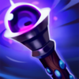
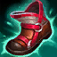

Asesino
/
Mago
Dificultad Moderada
HABILIDADES


PASIVA • TRIDENTE PIEDRAMAR
Los ataques de Fizz infligen daño prolongado adicional.
1 • GOLPE TRAVIERIZO
Fizz atraviesa a su objetivo, le inflige daño mágico y aplica efectos al impacto.
2 • OLA DESGARRADORA
Potencia el siguiente ataque de Fizz para infligir daño adicional. Matar a una unidad restablece el enfriamiento de Ola Desgarradora. Los ataques adicionales infligen más daño.
3 • JUGUETÓN / BROMISTA
Fizz salta y aterriza con gracia sobre su lanza, lo que lo vuelve inalcanzable. Desde esta posición, Fizz puede golpear el piso o volver a saltar antes de caer con fuerza.
DEFINITIVA • CARNADA PARA TIBURONES
Fizz arroja un pez que se adhiere y ralentiza a cualquier campeón que lo toca. Después de un momento, un tiburón surge del suelo, lo que levanta al objetivo y a cualquier enemigo cercano. Todos los enemigos alcanzados recibirán daño mágico y quedarán ralentizados.
CONFIGURACIÓN
OBJETOS
-

Maldición del Liche
2950+80 Poder de Habilidad
+10 Aceleración de Habilidad
MALDICIÓN: +5% de Velocidad de Movimiento.
ESPADA ENCANTADA: Usar una habilidad causa que el siguiente ataque dentro de 10 seg inflija daño mágico adicional igual al 75% AD básico (+50% AP). (1.5 seg de Enfriamiento).
El daño se reduce contra estructuras. -

Sombrero Mortífero de Rabadon
3500+120 Poder de Habilidad
DAÑO EXCESIVO: Aumenta el Poder de Habilidad en un 40%.
-

Orbe del Infinito
3150+200 Vida Máxima
+60 Poder de Habilidad
DESTINO: +5% de Velocidad de Movimiento.
BALANCE: +15% de Penetración de Magia.
MUERTE INEVITABLE: Las habilidades y los ataques potenciados infligen golpes críticos con un 20% de daño adicional contra enemigos por debajo del 35% de Vida. -

Báculo del Vacío
2800+70 Poder de Habilidad
DISOLVER: +40% de Penetración de Magia.
-

Morellonomicón
3000+300 Vida Máxima
+70 Poder de Habilidad
PREDICADOR DEL FIN: +15 de Penetración de Magia.
AFLICCIÓN: Infligir daño mágico aplica un 40% de Heridas Graves a campeones enemigos por 3 seg. Si el objetivo está por debajo del 50% de Vida, este efecto aumenta a un 60% de Heridas Graves.
Heridas Graves reduce la efectividad de las curaciones y efectos regenerativos. -

Botas Jonias de la Lucidez
1000CALZADO: +40 de Velocidad de Movimiento.
LUCIDEZ: +15 de Aceleración de Habilidad.
INVOCADO: Reduce los enfriamientos de hechizos un 15%.
CARRERA (ACTIVA): Aumenta la Velocidad de Movimiento un 15% durante 3 seg. Infligir o recibir daño de campeones desactiva los efectos de Carrera. (60 seg de enfriamiento). -

Encantamiento de Estasis
800ESTASIS (ACTIVA): Te vuelves invulnerable e inalcanzable durante 2.5 seg, pero no puedes moverte, atacar, lanzar habilidades ni utilizar objetos. (120 seg de enfriamiento).
RUNAS Y HECHIZOS
-

Electrocutar
Alcanzar a un campeón con 3 ataques o habilidades separados dentro de 3 seg inflige daño adaptable adicional.
DAÑO: 30-184 (basado en nivel) (+40% adicional AD) (+25% AP).
ENFRIAMIENTO: 25 seg. -

Brutalidad
Obtienes 7 de Daño de Ataque y un 2% de Penetración de Armadura o 14 de Poder de Habilidad y un 2% de Penetración de Magia (adaptable).
-

Segundo Aire
Gana 5 de Vida cada 5 seg.
Después de recibir daño de un campeón enemigo, regenera 3(+1.5% de tu Vida faltante) a lo largo de los próximos 10 seg. Este efecto se duplica para campeones cuerpo a cuerpo. -

Dulces Frutos
Aumenta la curación de Frutamiel en un 25%. Cada vez que tú o un aliado cercano coma una Frutamiel, obtienes 20 de oro.
-

Ignición
ENFRIAMIENTO: 90 seg.
Prende fuego al campeón enemigo objetivo, lo que inflige 60 de daño verdadero (60-410 basado en nivel) durante 5 seg y le aplica un 60% de Heridas Graves mientras dure el efecto. -

Destello
ENFRIAMIENTO: 150 seg.
Te teletransportas una distancia corta hacia delante o hacia la dirección objetivo.
CÓMO JUGAR FIZZ
Fizz es un asesino de daño mágico de mitad de camino. Él es un campeon cuerpo a cuerpo y puede tener muchas dificultades al principio del juego cuando intenta caminar y golpear a los súbditos por última vez. Una vez que llegues al nivel 5 y tengas acceso a Carnada para Tiburones, puedes intentar matar a los enemigos en el carril central o buscar deambular por el mapa con su estilo de juego agresivo.